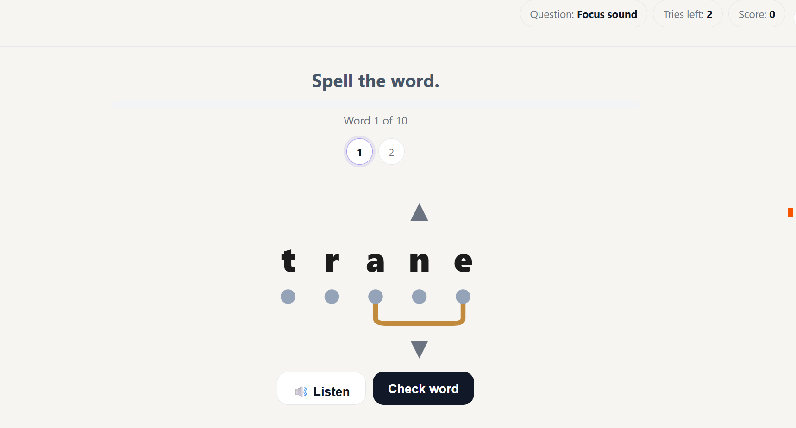
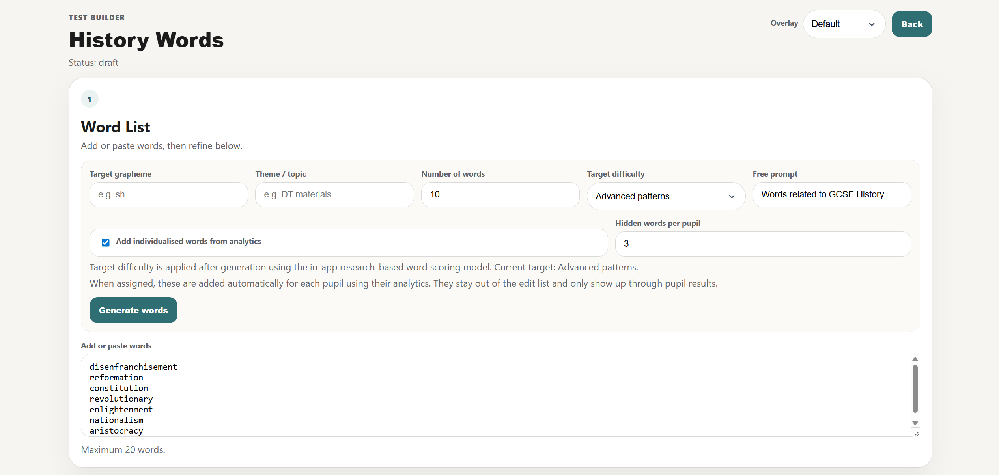
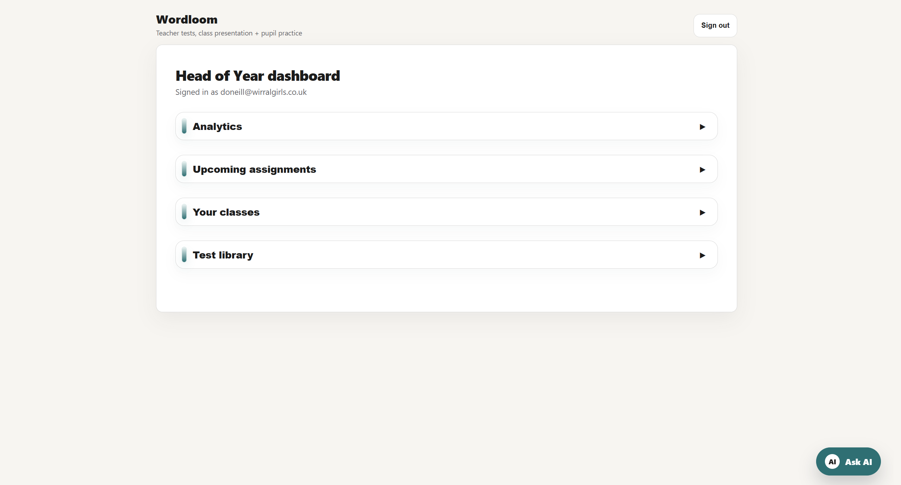
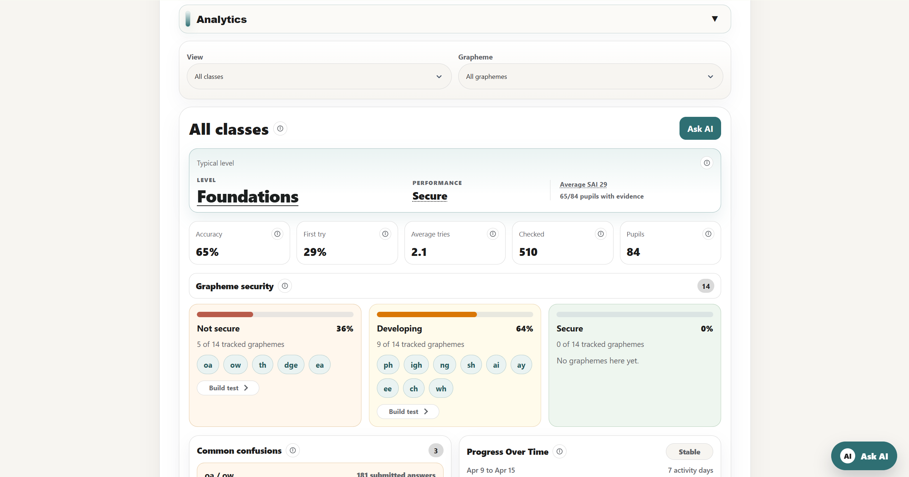
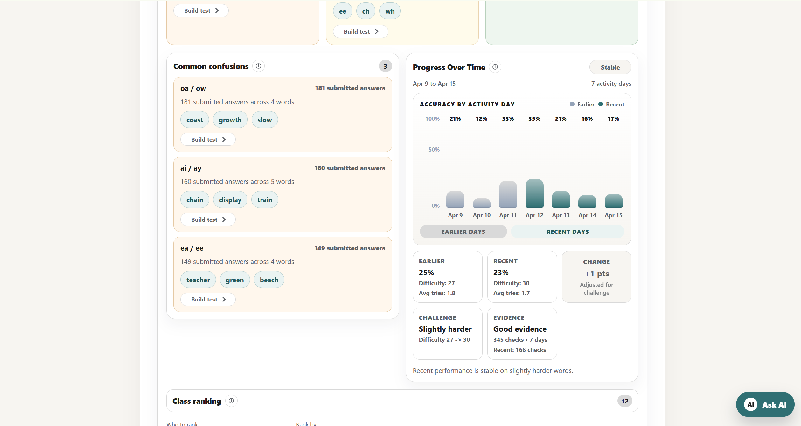
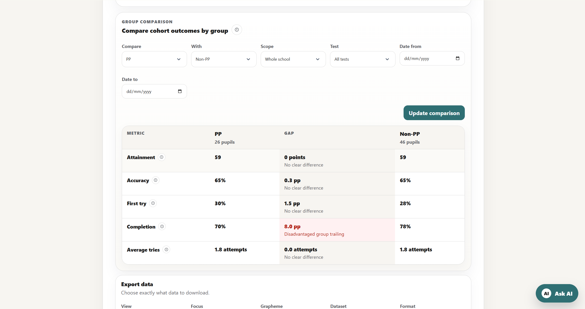

Teacher-created tests
Create word lists and focused spelling tests for the lesson, class, or group.
Wordloom helps teachers build spelling tests, present them live, assign pupil practice, and review progress without losing teacher control of the learning.

Wordloom keeps the familiar classroom rhythm while making practice and progress evidence easier to manage.
Create word lists and focused spelling tests for the lesson, class, or group.
Run clean classroom test sessions without turning the lesson into admin.
Assign practice pupils can complete separately, linked to real class activity.
Build spelling tasks from word lists or focused sound work.
Use Wordloom in the classroom for structured whole-class testing.
Send pupils the practice they need after the classroom session.
See useful patterns across pupils, words, and repeated attempts.
Teachers stay in control of the word list, test type, and focus of each activity.


Wordloom helps teachers review how pupils are developing over time, compare patterns, and spot where follow-up support may be useful.



Pupils can log in separately to complete assigned spelling tasks and follow-up practice. Teachers can keep the work connected to classroom teaching rather than treating practice as a separate system.
Go to pupil login
Wordloom is designed around teacher-controlled spelling practice. Pupils do not use open AI chat, and AI is not called while pupils are completing spelling tests.
Where AI is used, it supports teacher preparation, such as suggesting short sentences or word meanings. Context support helps pupils understand the word they are spelling without changing the spelling score, and baseline spelling evidence remains separate from optional meaning support.
School-edited context support is stored within the school’s Wordloom space. Teachers can review or adjust context support in the test builder before assigning work.
Book a walkthrough, try a sample test, or log in if your school is already using Wordloom.